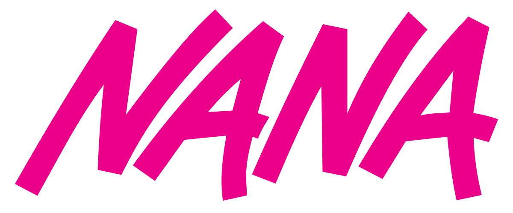

Nana cuenta la historia de dos jóvenes con el mismo nombre que se encuentran en un tren hacia Tokio. A pesar de sus personalidades opuestas, forman una profunda amistad mientras enfrentan los desafíos de la vida y el amor en la ciudad.